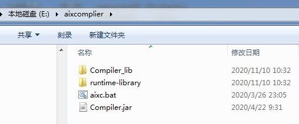
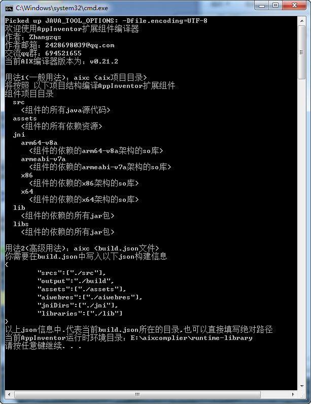
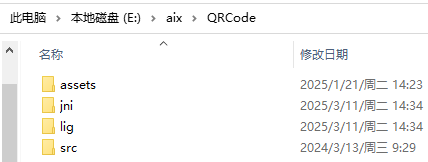
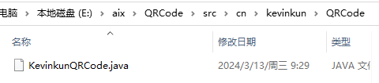
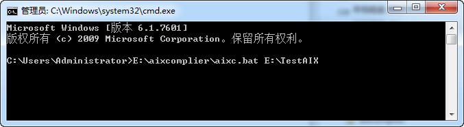
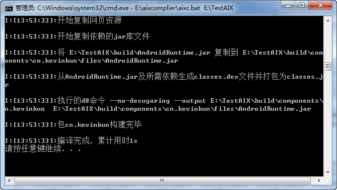
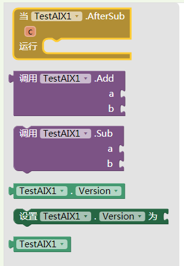
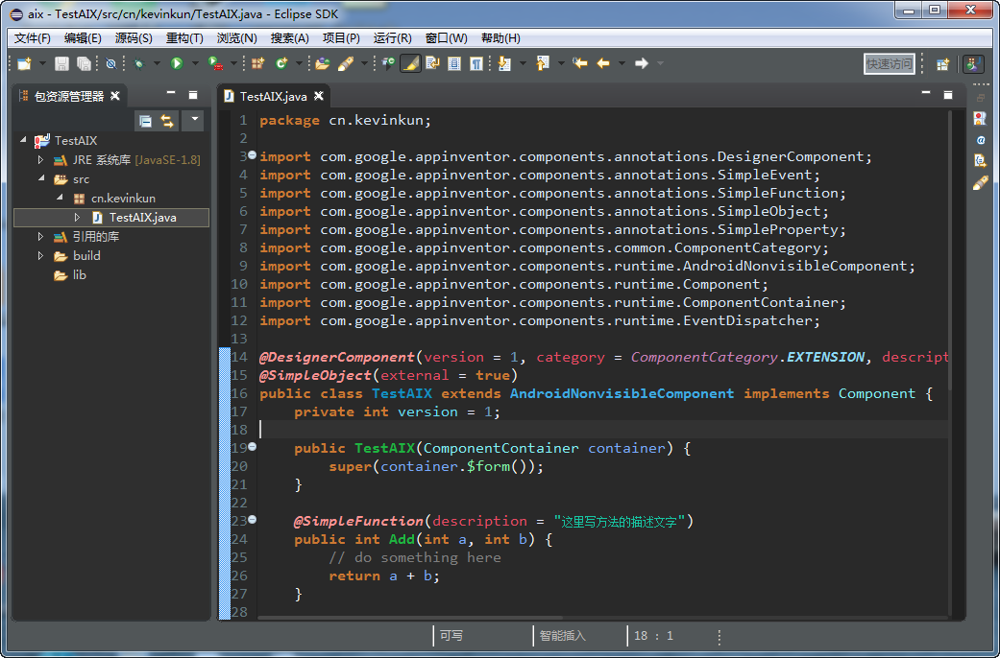

使用Aixc编译扩展
App Inventor 2允许我们自己开发扩展组件，但是MIT原生的编译环境搭建相对比较复杂，费时费力。本文介绍一个比较轻便的aix编译器。
本编译器由Zhangzq网友开发，在此对他的辛苦付出表示感谢。
-
下载AIX Complier,并解压到电脑。下载地址，也是Zhangzq的Gitee仓库, 本例是解压到E盘aixcompiler文件夹下：

- 双击aixc.bat文件，可以看到aixCompiler的用法如下：

-
QRCode.zip 这个是我写的一个二维码生成器扩展源代码。解压后它的目录结构是 QRCode是项目名，下面有src，assets，jni，lib等目录。

src文件夹是存放源码文件，在src内按照包名的顺序再建立文件夹和java文件，结构如图：

其中，KevinkunQRCode.java就是扩展的源码，是个文本文件，可以用很多的文本编辑器打开（比如notepad++, editplus等等，并且保存为utf8格式的文本。切记不要用windows自带的记事本和写字板打开。）。你可以在这个模板基础上修改成你需要的代码。注意包名和目录结构的对应关系。
如果要引用素材资源，需要把资源放在assets文件夹下，在源码中添加：
@UsesAssets(fileNames = "assets1.html,assets2.js")
如果要导入其他jar包，需要把jar文件放在lib文件夹下，在源码中添加：
@UsesLibraries(libraries = "someJarFile.jar")
如果要引用so包，需要把so文件放在jni文件夹下相应的类别中，并在源码中添加（官方文档是这样写的，但是测试并不成功）：
@UsesNativeLibraries(v7aLibraries = "someSoFile.so")
-
打开命令行窗口（按win+R，运行cmd命令），执行如下命令：
E:\aixcompiler\aixc.bat E:\kevinkunaix\QRCode
如果不想输入代码或者怕输入错误，可以直接拖动TestAIX文件夹到aixc.bat文件上，等同于执行上述命令。
-
如果没有错误的话，会显示编译完成及用时。如图： 
如果看不到倒数第二行的“编译完成，累计用时”这几个字，说明有错误，请仔细查看窗口显示的提示信息，修改源码。
-
编译完成，会在QRCode文件夹下生成一个build文件夹，aix扩展文件会保存在\build\outputs文件夹下。（同时还有个md文件，这个是同步生成的aix说明文件，可以配合gitbook生成html文件。有兴趣的自行研究，这里不作说明）
-
现在可以将aix导入服务器（将aix文件直接拖动到开发服务器的组件设计界面就可以导入），扩展导入后如下图。你可以对照源码，看看这些块是对应的源码中的哪一部分。 
-
记事本编辑源码虽然简便，但是没有代码提示，不能很好的组织文档，建议使用Eclipse或者其他高级的代码编写软件。 
-
多多查看其他的app inventor组件的源码，可以更好的了解如何写aix。